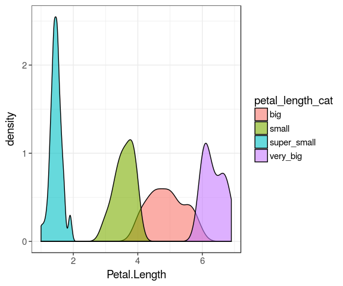

So much for the tidyverse
- Reading data
- Tidy data
- Manipulation
- Functional programming
- Tidying model objects
- Consistent and compact data analysis using tidy verse
5 May 2017
case_when()Great vectorise multiple if and else if statements
summary(iris$Petal.Length)
Min. 1st Qu. Median Mean 3rd Qu. Max. 1.000 1.600 4.350 3.758 5.100 6.900
iris %>%
as_tibble() %>%
mutate(
petal_length_cat = case_when(
Petal.Length < 2 ~ "super_small",
Petal.Length < 4 ~ "small",
Petal.Length < 6 ~ "big",
TRUE ~ "very_big")) %>%
ggplot(aes(x = Petal.Length,
fill = petal_length_cat)) +
geom_density(alpha = 0.6)


git training
tidyverse and course material